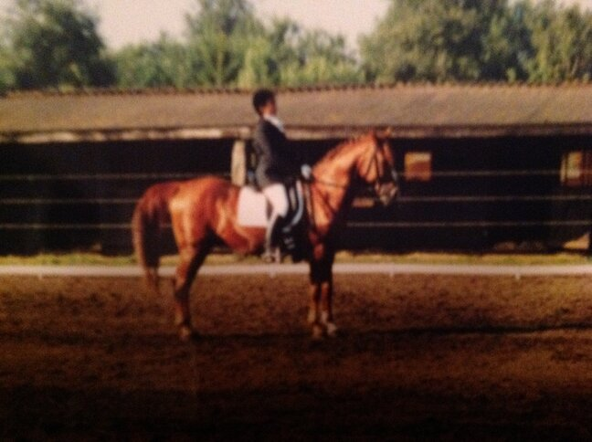
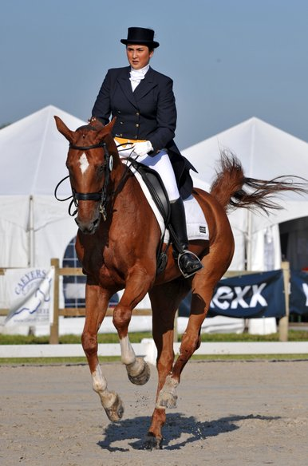
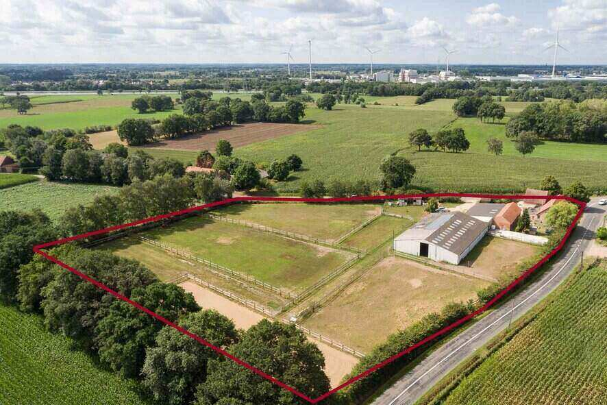

 Victory Stables is opgericht door Kenny Govers en mezelf, Julene Wuyts. Mijn passie voor paarden begon al van jongsaf toen ik een pony kreeg van mijn Filipijnse oma. Hier wilde ik graag op rijden als ik daar nog eens op vakantie zou gaan dus ben ik hier in België paardrijlessen beginnen nemen. Ik had de microbe goed te pakken en mijn ouders besloten om ook hier een paard te kopen, Abiran.
 Samen waren we onafscheidelijk en een winnend team op wedstrijden. 2 jaar later kwam er nog een paard bij, Noriyal. Met dit talentvolle paard kon ik deelnemen aan het hogere werk op nationaal niveau.

Toen ik Kenny leerde kennen, werd hij al snel mijn rechterhand op wedstrijden.
Samen zochten we een eigen stekje en een logische keuze was dus om samen
een zaak met paarden te starten.
Met het pand dat we in 2010 aankochten, konden we dit realiseren.